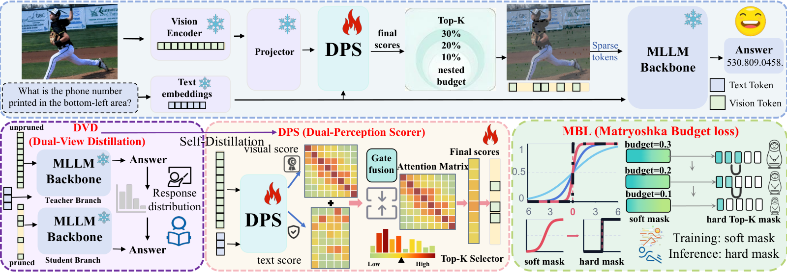

选取理由 【近期回看，非当日新增】相同贪心答案不能保证置信度和采样行为稳定。DiFiT 用完整输入的分布指导选择，将预测漂移加入压缩评测，适合检验稀有证据保留。匹配度高、机制可迁移性高、工程可行性中、证据质量中高，近期进展为 11 月 11 日 v1，未确认代码和正式 venue。
研究背景
由原简报的核心问题、选取理由和相关性整理，不替代原文背景综述。
视觉 Token 剪枝常只比较答案准确率和速度，但告警阈值与拒答依赖输出概率。即使贪心答案未变，删去局部证据也可能改变其他答案的概率，进而影响抽样或阈值决策。对于短时破裂前兆与行人细粒度属性，需要评估这种隐性变化，不能只看平均任务分数。
从本日报的选取理由看，【近期回看，非当日新增】相同贪心答案不能保证置信度和采样行为稳定。DiFiT 用完整输入的分布指导选择，将预测漂移加入压缩评测，适合检验稀有证据保留。匹配度高、机制可迁移性高、工程可行性中、证据质量中高，近期进展为 11 月 11 日 v1，未确认代码和正式 venue。
核心问题 在多个保留预算下，怎样学习离散视觉证据选择，同时维持任务分数与完整输入的响应分布。比较分布时固定共同参考前缀，使差异主要来自输入剪枝。
对当前主题的关键意义在于：原始应用领域：图像与视频问答剪枝。可迁移模块或训练目标：双视角软分布蒸馏、可微选择和共享多预算排序。对应在研问题：P4 信息保持与 P2/P3 阈值决策可靠性。预期计算和显存影响：序列缩短可降低 prefill 成本，教师训练和评分器另计。主要失效条件或数据风险：被删证据不可恢复、共同前缀评估低估自由生成误差。最小验证实验：冻结小骨干，固定 20% 预算，对比均匀、相似度与分布蒸馏筛选，测 AUCPR、校准误差、置信度翻转、稀有前兆召回与 P95 延迟。
方法与关键创新

Fig. 2: Overview of DiFiT. DVD matches the softly weighted student view to full-token response distributions. DPS scores visual importance and text relevance. MBL aligns soft masks...
冻结骨干，以答案监督加双视角分布蒸馏训练评分器，采用可微 Top-K 学习离散保留集合。多预算掩码目标用共享排序支持不同保留率。共同前缀上的概率匹配与自由生成的一致性不同，原文分别分析。
阅读时需要把方法设计与主要结果一起看：Qwen2.5-VL-7B 在四任务贪心正确样本控制集、10% 保留时，相对 FastV 的采样负翻转减少 30.3%。MME 在 30% 保留时维持基线分数的 98.74%。MVBench 的 20% 保留设置中，prefill 从 1413.34 降至 603.90 毫秒，峰值显存从 25.97 降至 16.45 GB。均为作者报告，prefill 不含后续响应解码。
实验结果 Qwen2.5-VL-7B 在四任务贪心正确样本控制集、10% 保留时，相对 FastV 的采样负翻转减少 30.3%。MME 在 30% 保留时维持基线分数的 98.74%。MVBench 的 20% 保留设置中，prefill 从 1413.34 降至 603.90 毫秒，峰值显存从 25.97 降至 16.45 GB。均为作者报告，prefill 不含后续响应解码。
局限性 硬选择仍完整丢弃 Token，蒸馏不能恢复所有局部证据。评分器占用计算与临时显存，自由生成可累积前缀分叉误差。未确认公开实现，原文没有事件流或聚变诊断实验。
总结 把概率漂移加入等预算压缩对照，并独立检查稀有前兆召回。
研究相关性与启发 原始应用领域：图像与视频问答剪枝。可迁移模块或训练目标：双视角软分布蒸馏、可微选择和共享多预算排序。对应在研问题：P4 信息保持与 P2/P3 阈值决策可靠性。预期计算和显存影响：序列缩短可降低 prefill 成本，教师训练和评分器另计。主要失效条件或数据风险：被删证据不可恢复、共同前缀评估低估自由生成误差。最小验证实验：冻结小骨干，固定 20% 预算，对比均匀、相似度与分布蒸馏筛选，测 AUCPR、校准误差、置信度翻转、稀有前兆召回与 P95 延迟。